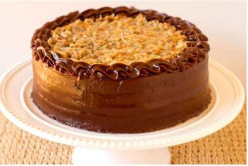

05/Jan
Classic Yellow Cake with Chocolate Frosting
This fluff vanilla cake recipe is the absolute best yellow cake from scratch and paired with the silky smooth chocolate frosting, you can't beat it for a classic birthday cake or any other celebration!
Read more01/Feb
Coconut Bundt Cake with White Chocolate-Coconut Glaze
Last week flew by and before I knew it, it was time to plan the menu for Sunday dinner. Sundays have been a perfect opportunity for me to experiment with new dessert recipes, especially those that serve tons of people, since we have help polishing.
Read more12/Feb
Cream Cheese Pound Cake
If you are looking for the perfect cream cheese pound cake recipe that turns out buttery, moist, and dense each and even* time, add this year-round crowd-pleaser to your list! Using only 7 simple ingredients, this easy cream cheese pound cake will quickly become your favorite; sen'e plain with a sprinkle of powdered sugar or offer homemade whipped cream and berries, or a drizzle of salted caramel or fudge sauce.
Read more25/Feb
German Chocolate CakeCream

I have long associated German Chocolate Cake with Father's Day, although I'm not entirely sure why. I think I remember my mom making it for my dad once or twice growing up (although never on Father's Day, ironically) and the correlation must have stuck somewhere along the way.
Read more